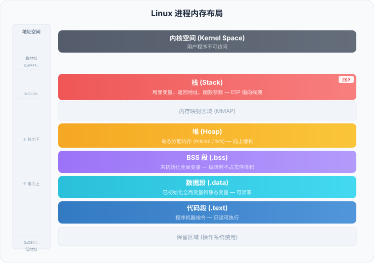

アセンブリ言語 - メモリセグメント
メモリセグメンテーション（Memory Segmentation）はx86アーキテクチャにおける中核的概念であり、プログラムがメモリ内でコード、データ、スタック領域をどのように構成するかを決定します。
なぜセグメント化が必要か
x86リアルモードでは、CPUは16ビットレジスタを使用しますが、1MBのメモリ空間（20ビットアドレス）にアクセスする必要があります。
16ビットレジスタは64KBの範囲しか表現できません（2^16 = 65536）、はるかに不十分です。
Intelの解決策は、メモリをセグメントに分割すること段（Segment）、各セグメントにはベースアドレスとオフセットがあり、それらを介して段地址 + 偏移量の方法で完全な物理アドレスを組み合わせる。
物理アドレス計算式：
物理地址 = 段地址 × 16 + 偏移地址
保護モード（32ビット）では、セグメンテーション機構は主にメモリ保護と権限制御に使用されますが、アセンブリプログラムの構造を理解するためにセグメントを理解することは依然として極めて重要です。
三种基本段
典型的なアセンブリプログラムは、3つの主要なセグメントを使用します：
| 段名称 | 英文名 | 用途 | 対応する Section |
|---|---|---|---|
| 代码段 | Code Segment | 実行可能な機械語命令を格納する | section .text |
| 数据段 | Data Segment | 初期化済みのグローバル変数を格納する | section .data |
| 栈段 | Stack Segment | 関数呼び出し情報、ローカル変数を格納する | オペレーティングシステムが自動管理 |
コードセグメント（.text）
コードセグメントはプログラムのすべての機械語命令を格納するものであり只读、可执行のメモリ領域。
オペレーティングシステムは、プログラムをロードする際にコードセグメントを読み取り専用メモリページにマッピングし、プログラムが命令を誤って変更するのを防ぎます。
实例
; 演示代码段使用
section .text ; 开始代码段
global _start
_start:
mov eax, 1 ; 这些指令都存放在代码段中
mov ebx, 0
int 0x80
; 以下是一个辅助函数，也存放在代码段
my_function:
mov eax, 42
ret
データセグメント（.data）
データセグメントはプログラム内の已初始化的全局变量。
データセグメントは読み書き可能で、プログラム実行中にその内容を変更できる。
实例
; 演示数据段使用
section .data
; 定义各种类型的已初始化变量
msg db 'Hello, runoob!', 0 ; 字符串变量（字节序列）
count db 100 ; 字节变量，初始值 100
pi dd 314159 ; 双字变量，存放 π 的近似值 × 100000
array db 1, 2, 3, 4, 5 ; 字节数组
section .text
global _start
_start:
; 读取数据段中的变量
mov al, [count] ; 将 count 的值（100）加载到 al 寄存器
; ...
mov eax, 1
mov ebx, 0
int 0x80
BSS 段（.bss）
BSS（Block Started by Symbol）段存放未初始化的全局变量。
データセグメントとは異なり、BSSセグメントは実行可能ファイル内で実際のスペースを占有しません。プログラムのロード時にのみ、オペレーティングシステムによってメモリが割り当てられ、ゼロクリアされます。
实例
; 演示 BSS 段使用
section .bss
buffer resb 256 ; 预留 256 字节的缓冲区（未初始化）
num_array resd 100 ; 预留 100 个双字（400 字节）
section .data
; 已初始化数据
section .text
global _start
_start:
; 使用 BSS 段的缓冲区
mov byte [buffer], 'A' ; 向缓冲区写入字符 'A'
; ...
mov eax, 1
mov ebx, 0
int 0x80
未初期化データを.dataセグメントではなくBSSセグメントに置くことで、実行可能ファイルのサイズを削減できます。例えば、10KBの未初期化バッファはBSSセグメントではファイルサイズを占有しませんが、.dataセグメントに置くとファイルが10KB大きくなります。
段寄存器
x86アーキテクチャには6つのセグメントレジスタがあり、現在使用中のセグメントを追跡するために使用されます：
| 段寄存器 | 英文全称 | 用途 |
|---|---|---|
| CS | Code Segment | コードセグメントを指し、現在実行中の命令が存在するセグメントのベースアドレスを格納します。 |
| DS | Data Segment | データセグメントを指し、ほとんどのデータアクセスのセグメントベースアドレスを格納します。 |
| SS | Stack Segment | スタックセグメントを指し、スタックが存在するセグメントのベースアドレスを格納する |
| ES | Extra Segment | 付加セグメントレジスタであり、文字列操作などの追加データセグメントに使用されます。 |
| FS | General Purpose | 汎用セグメントレジスタであり、スレッドローカルストレージによく使用されます。 |
| GS | General Purpose | 汎用セグメントレジスタであり、スレッドローカルストレージによく使用されます。 |
32ビット保護モードでは、プログラマは通常セグメントレジスタを手動で設定する必要はなく、オペレーティングシステムとリンカが適切に処理します。
メモリセグメント化の模式図
実行中のプログラムのメモリ内での配置は以下の通りです：

実行中のプログラムのメモリ内での配置はおおよそ以下の通りです：
高地址 +-------------------+ | 栈 (Stack) | <-- SS:ESP 指向栈顶 | 向下增长 | +-------------------+ | | | 空闲内存 | | | +-------------------+ | BSS 段 (.bss) | 未初始化的全局变量 +-------------------+ | 数据段 (.data) | 已初始化的全局变量 +-------------------+ | 代码段 (.text) | 程序指令（只读） +-------------------+ | 保留区域 | 操作系统使用 +-------------------+ 低地址
リアルモード vs プロテクトモード
| 特性 | リアルモード（16ビット） | プロテクトモード（32ビット） |
|---|---|---|
| 内存寻址 | セグメントアドレス × 16 + オフセット | セグメントセレクタがディスクリプタテーブルを参照 + オフセット |
| 最大内存 | 1MB | 4GB（32 位） |
| 内存保护 | 无保护 | ページレベルとセグメントレベルの保護がある |
| 多任务 | 不支持 | 支持 |
| 寻址方式 | segment:offset | selector:offset（ディスクリプタテーブル経由） |
其他扩展本チュートリアルは主に32ビットプロテクトモードでのアセンブリプログラミングを紹介します。このモードでは、セグメントの概念はよりメモリ領域の論理的な区分であり、物理アドレスはページング機構によって管理されます。section .data/.bss/.text を、プログラムのさまざまな部分のメモリ内でのマーカーとして単純に理解して構いません。
クリックしてノートを共有
笔记需要是本篇文章的内容扩展！
文章投稿，可点击这里
注册邀请码获取方式
分享笔记前必须登录！
注册邀请码获取方式